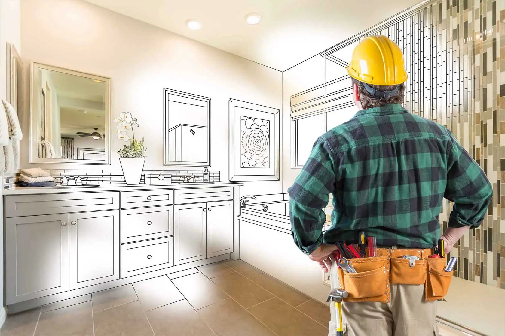

Strategically scaled solutions for every build.
We provide fully customized project solutions, strategically scaled to meet the specific demands of every build.

Pre-Construction
Early planning, value engineering, constructability reviews, and strategic procurement support.
Explore Service →

Construction Management
Clear communication, accountability, and real-time coordination across schedule, cost, and progress.
Explore Service →
Design-Build
Integrated delivery from concept through completion with tighter alignment on cost, timeline, and quality.
Explore Service →
General Contracting
Reliable execution across commercial, industrial, and institutional projects with disciplined reporting.
Explore Service →
Master Service Agreements
Consistent delivery across ongoing project needs, upgrades, retrofits, repairs, and portfolio work.
Explore Service →

Renovations & Expansions
Targeted upgrades, phased improvements, and expansion work designed around existing operations, timelines, and future growth.
Explore Service →
Welding & Fabrication
Custom metalwork, on-site support, and fabrication solutions delivered with precision, durability, and practical execution.
Explore Service →